经常见到相关言论说“兰是刚来到大城市的青山心中青梅竹马的投射，后来他发达了自然就看不上糟糠之妻，转而推柯哀了”，似乎很有道理信服的人也不少，但是事实呢？青山在画名柯之前已经向sunday供稿了八年，根本不是他们所言的初出茅庐毛头小子。
青山确实有过创作思想转变，但那早已是名柯连载之前的事。那么“青山究竟喜欢什么样的故事”，楼下详细论证。
青山确实有过创作思想转变，但那早已是名柯连载之前的事。那么“青山究竟喜欢什么样的故事”，楼下详细论证。
1986年，青山发表了自己的处女作《玩世流犯》，并在2017年亲口承认这是《魔术快斗》的前身。这是个标准青山式恋爱喜剧，流犯快斗和宝睦葵子也是青山笔下第一对青梅竹马——青山用“小时候葵子被绑架快斗救她回家”和“宝睦警官很了解快斗”来表现。
但是，在背景家世上，这对青梅竹马可谓是天壤之别。女主宝睦葵子，父亲是警官，按负责的案子看起码是警视长起步。男主流犯快斗，家世不详，仅有一句“听说他爸爸是小偷”。葵子是在校园内开侦探社免费帮助人的JK侦探，人际关系很好；快斗虽然是人气魔术师但故事中除了葵子外没有任何亲近的人。短篇细看似乎没有任何问题，但细想设定的话，就会有“快斗是被宝睦家收养的孤儿”这种既视感。男主除了才能外什么都没有，但就是因此能
另外玩世流犯虽然是英雄救美的故事，但感情中付出更多一方很明显是女主葵子——快斗之所以要救葵子，是因为葵子为了他的安全而自愿身陷险境——无论从哪个方面都是葵子向下兼容。
但是，在背景家世上，这对青梅竹马可谓是天壤之别。女主宝睦葵子，父亲是警官，按负责的案子看起码是警视长起步。男主流犯快斗，家世不详，仅有一句“听说他爸爸是小偷”。葵子是在校园内开侦探社免费帮助人的JK侦探，人际关系很好；快斗虽然是人气魔术师但故事中除了葵子外没有任何亲近的人。短篇细看似乎没有任何问题，但细想设定的话，就会有“快斗是被宝睦家收养的孤儿”这种既视感。男主除了才能外什么都没有，但就是因此能
另外玩世流犯虽然是英雄救美的故事，但感情中付出更多一方很明显是女主葵子——快斗之所以要救葵子，是因为葵子为了他的安全而自愿身陷险境——无论从哪个方面都是葵子向下兼容。
2024-07-30 04:24 | 贴吧用户_5N4ba8Q:草怎么没打完。“但就是因此能在女方心里占有一席之地，好像证据不够充足啊，那就加个青梅竹马设定吧”
青山给sunday投稿的第一篇漫画《等着我哟》没什么好细说的。值得注意的大概只有男主高井丰觉得自己配不上女主阿部麻巳子所以想穿越，结果危险的事被女主干了，男主等了女主不到一年就把她忘了。虽然结果是男女主he也达到了所谓的相配，但付出的明显是女主更多，总不能说除了等待什么都没干的男主很坚强吧。
PS：男女主不是青梅竹马，女主比男主大两岁。
《夏日的圣诞老人》，给人的既视感更为强烈。男主源佳祐，一事无成的失恋男高，误打误撞有了许愿都能实现的机会，于是他就借此泡到了女主安西明日香（真大明星，魔快名柯她都客串过）。虽然我不否认源佳祐挺亚撒西的，但他给安安提供的那些没一点是他自己的东西——完全就是男主空手套白狼了啊！
PS：男女主不是青梅竹马，女主比男主大两岁。
《夏日的圣诞老人》，给人的既视感更为强烈。男主源佳祐，一事无成的失恋男高，误打误撞有了许愿都能实现的机会，于是他就借此泡到了女主安西明日香（真大明星，魔快名柯她都客串过）。虽然我不否认源佳祐挺亚撒西的，但他给安安提供的那些没一点是他自己的东西——完全就是男主空手套白狼了啊！
2024-07-31 10:36 | D之家族817:那个等着我哟 女主回来的时候男主甚至有女朋友了😂 女主一回来男主就直接投入女主怀抱了 一旁的女友知趣离开（我当时看得满头问号😂2024-07-31 19:26 | 贴吧用户_5N4ba8Q:回复 D之家族817 :青山短篇集除了剑豪风云再起/没怎么讲爱情的彷徨红蝶与传说中的球棒外我都不大能看得下去，这老头价值观太超前了但有一说一这确实是那个问题的答案——新兰性转了会怎样
青山下一部作品就是87年连载至今的《魔术快斗》，男主没爹，妈还是家庭主妇，怎么看表面上都是家道中落了。女主早期看着也像单亲家庭，魔快前期还好点，等到第四卷青山就装都不装了，直接把快斗写成中森家名誉长子，并在此后的30年里逐渐强调这一印象。魔快之后还会提这里先不赘述。
后来改编成了优作和有希子约会故事的《彷徨的红蝶》没什么参考价值不提了。连载了3话的《侦探祥二的超迷你大作战》，我个人不是很喜欢所以只提一点，女主是富家千金，因为爱情自愿去给迷你身材的大叔男主当侦探助手，让他住到自己家来。不管怎么看我都说服不了自己他们有一点点配……
所以提前做个总结，可以看出，这才是刚从鸟取出来的穷小子青山的真实想法——苍天啊，给个富婆姐姐包养我吧，虽然我配不上人家但谁让千金对我有感情呢。
青山不是喜欢青梅竹马，他单纯只是看上人姑娘家世罢了
后来改编成了优作和有希子约会故事的《彷徨的红蝶》没什么参考价值不提了。连载了3话的《侦探祥二的超迷你大作战》，我个人不是很喜欢所以只提一点，女主是富家千金，因为爱情自愿去给迷你身材的大叔男主当侦探助手，让他住到自己家来。不管怎么看我都说服不了自己他们有一点点配……
所以提前做个总结，可以看出，这才是刚从鸟取出来的穷小子青山的真实想法——苍天啊，给个富婆姐姐包养我吧，虽然我配不上人家但谁让千金对我有感情呢。
青山不是喜欢青梅竹马，他单纯只是看上人姑娘家世罢了
2024-07-30 22:05 | 贴吧用户_5726KyK:快斗一家只是表面没了爹，实际上就背景而言，快斗只是单纯放养并且和中森家关系好而已，不能算比中森家差2024-07-30 22:49 | 贴吧用户_5N4ba8Q:回复 贴吧用户_5726KyK :所以我说表面嘛，毕竟黑羽盗一死了，黑羽家往来的交际肯定是没有工藤家那样的，绿之梦篇与水晶之母篇的戏票和车票都是警部帮快斗弄的，在表面上应该能说是黑羽家富但是中森家阶层高
《剑豪风云再起》个人认为是青山短篇里最浪漫的故事——返老还童的爷爷对孙女英雄救美让孙女迷上了他，但最终爷爷还是变了回去，孙女永远都不知道在她心里留下惊鸿一瞥的少年究竟是谁。似乎有一部分悲观ca认为这是柯哀注定分离的暗示，但换个思路，[樱三十郎]这个不存在的身份，在名柯究竟是柯南还是新一呢？
《传说中的球棒》，这篇对于柯南的可讨论性或许应该去看由此改编的名柯ova14，演都不演了直接把美苗明哲小健对标柯南小兰小哀。相较于原作的开放性结局（几年后他们三个都还是好朋友），ova14明显是给了美苗小健的暗示，当然这就不是我这个帖子的讨论范围了，不再赘述。
《传说中的球棒》，这篇对于柯南的可讨论性或许应该去看由此改编的名柯ova14，演都不演了直接把美苗明哲小健对标柯南小兰小哀。相较于原作的开放性结局（几年后他们三个都还是好朋友），ova14明显是给了美苗小健的暗示，当然这就不是我这个帖子的讨论范围了，不再赘述。
88年8月24日，青山那争气的二儿子《剑勇传说》开始连载。开头便贯彻了青山一贯的创作思路，男主铁剑是跟着父亲从小在丛林里长大的野人；女主峰莎也加则是家里开剑道场的，条件比铁剑要优越太多。而男主爹开局就自个跑了，把铁剑扔给峰家照顾；后期铁剑一路上遇到的伙伴全在峰家蹭吃蹭喝蹭住，青山是真的很喜欢赘婿型男主。
另外90年到93年连载的中篇《四号三垒》，虽然男主长岛茂雄有妈有家，但他在打棒球之外主要还是去女主家开的咖啡店打工，甚至还得指望女主江夏丰给他发工资。名柯连载前，青山笔下的赘婿型男主多达五个，所以青山大男子主义？开什么玩笑，他巴不得有富婆供他躺平呢。
另外柯兰真的是个缝合怪：青梅竹马来源于魔术快斗的快青，小小体型的男主住女主家来源于剑勇传说的铁峰，女主爹看不惯男主来源于四号三垒的长丰——硬凑的下场是什么，各位应该都看到了
另外90年到93年连载的中篇《四号三垒》，虽然男主长岛茂雄有妈有家，但他在打棒球之外主要还是去女主家开的咖啡店打工，甚至还得指望女主江夏丰给他发工资。名柯连载前，青山笔下的赘婿型男主多达五个，所以青山大男子主义？开什么玩笑，他巴不得有富婆供他躺平呢。
另外柯兰真的是个缝合怪：青梅竹马来源于魔术快斗的快青，小小体型的男主住女主家来源于剑勇传说的铁峰，女主爹看不惯男主来源于四号三垒的长丰——硬凑的下场是什么，各位应该都看到了
这里要详细提一下四号三垒，江夏丰是我心目中青山笔下除宝睦葵子外唯一的完美女主，真的浑身上下找不到一个黑点，小丰小丰我喜欢你，长岛茂雄我要跟你抢女朋友（划掉）
好了开始讲剧情。男主长岛茂雄是个有天分但不自信的棒球选手，从来没打中过球。他偶然得到了一只“只要花钱就什么球都能打回去”的神之球棒，因为缺钱所以去咖啡店打工。这是男女主第一次见面的情景：
好了开始讲剧情。男主长岛茂雄是个有天分但不自信的棒球选手，从来没打中过球。他偶然得到了一只“只要花钱就什么球都能打回去”的神之球棒，因为缺钱所以去咖啡店打工。这是男女主第一次见面的情景：
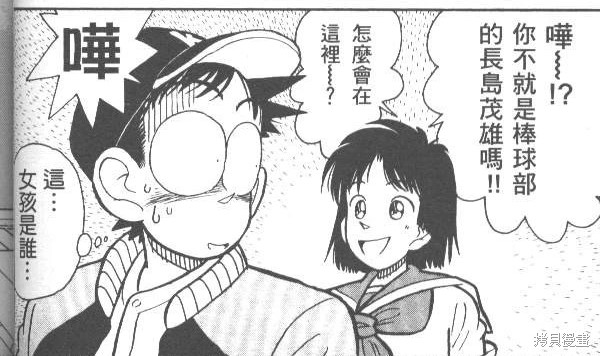
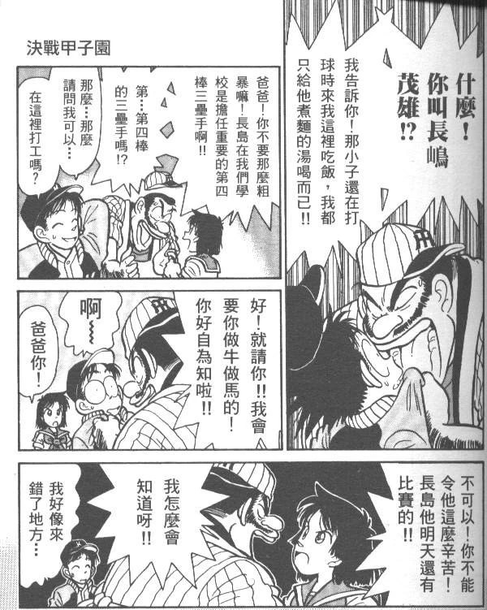
小丰在见面之前就知道长岛是棒球部的四号三垒手（要知道此时长岛还是一上场就会被群嘲的队员），并为了长岛的棒球比赛怒怼自家老爹。之后每一次江夏爸爸讽刺长岛，小丰也都会替长岛说话。
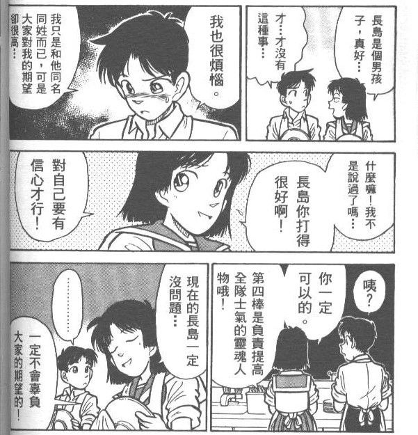
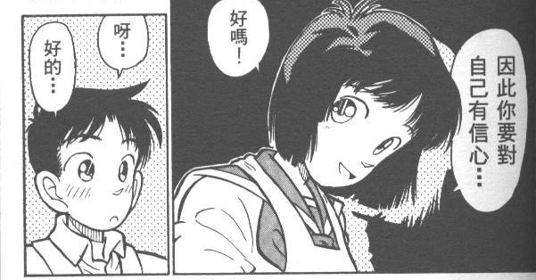
图放出来就不用我再解释了吧？把“你是我的骄傲”直球打你脸上，青山90年就画出了他最理想的普通JK模样，没奈何有些人只会装睡，自欺欺人说是“情趣”，悲哀啊第一个要点来了，小丰送给长岛的御守，是青山宇宙里第一个护身符。
第二个要点：江夏丰是青山最早的宁茶论代言人。
于是小丰：带我去甲子园！
或许有人不太能理解，侦探也不太好举例……那我就用剑道来打比方吧。平次下个月有一场剑道比赛，这时他对和叶说我带你出去玩，和叶回答“带我去决赛现场”。我就问哪个男人能不为这话心动？尤其是棒球还是长岛最为热爱的事业。
看起来是茶茶，但实际上是会帮助男主把恋爱与事业目标合二为一的宁宁。逐渐在东京站稳了的青山的价值观，在《四号三垒》里可见一斑。
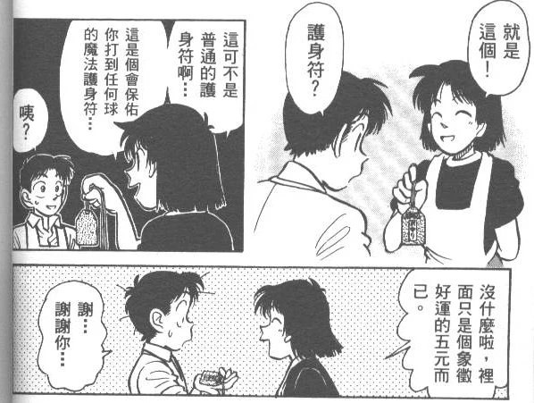
之后这个护身符确实救了长岛——在他把身上的钱用完后，靠着护身符里的五块钱打出了决胜球，因此拿到甲子园的参赛资格。所以在含义上也是，青山笔下的护身符是能够保护对方的定情信物啊。第二个要点：江夏丰是青山最早的宁茶论代言人。
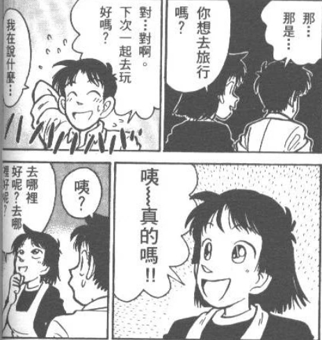
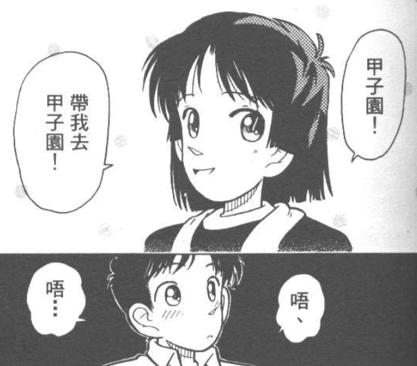
长岛的钱是要用来打棒球的，但是在小丰随口一问的情况下，他依旧说出了“下次一起去玩好吗”这样犯恋爱脑的话——和因为由美而输了比赛的秀吉一样。虽然不是有意，但某种意义上来说，小丰这里是阻碍了长岛的事业。于是小丰：带我去甲子园！
或许有人不太能理解，侦探也不太好举例……那我就用剑道来打比方吧。平次下个月有一场剑道比赛，这时他对和叶说我带你出去玩，和叶回答“带我去决赛现场”。我就问哪个男人能不为这话心动？尤其是棒球还是长岛最为热爱的事业。
看起来是茶茶，但实际上是会帮助男主把恋爱与事业目标合二为一的宁宁。逐渐在东京站稳了的青山的价值观，在《四号三垒》里可见一斑。
2024-07-30 05:34 | 贴吧用户_5N4ba8Q:补充：在这之前，长岛根本不敢想自己能打进甲子园，是因为小丰这句“带我去甲子园”才拿出了自信。爱的力量是无限的，这或许就是年轻时青山的浪漫吧（笑）2024-07-30 05:38 | 2021年的相遇:和“赢给我看，工藤”有异曲同工之妙2024-07-30 07:47 | 贴吧用户_5N4ba8Q:回复 2021年的相遇 :柯哀是青山cp的集大成者，长丰这么好的梗当然要用2024-07-30 21:19 | snowfly1024:好像棒球英豪里的小南哦，对上杉兄弟说“带我去甲子园”，那是我小时候第一次知道甲子园这个地方2024-08-03 04:06 | 狄赛罗:说真，安达充味道很浓
之后长岛的比赛，小丰是一次不落到场为他加油，长岛也是每次比赛前都要os一句“为了那个女孩”。而在决赛里，长岛的神之球棒折断了。一直以来建立的自信崩塌，长岛开始怀疑人生想要退赛。
《四号三垒》是青山写从无到有爱情的第一次成功尝试，不同于魔快一开始就给你青梅竹马的设定，剑勇前期描写的铁峰日常完全感觉不到他们之间有爱情，四号三垒的感情线可谓贯彻始终又毫不突兀，读者很容易就能理解为什么长岛会爱上小丰——她真的是值得人爱的女孩子。
剑勇里，铁峰第一次情感爆发，试炼之路里莎也加自愿掉悬崖（后被改编为平和人鱼岛），和四号三垒开始连载的时间点极为接近。也就是说，90年的青山受到了什么影响，恋爱喜剧大魔王的雏形就此产生了。
（另外90年的魔快里，青山也开始画从零开始的探红线。或许是编辑部打压，魔快在那之后停更了三年，探红线直到24年后才被青山重新捡起来，所幸那时候大魔王已经是完全体了，画的探红更为成熟，也算是好事吧）
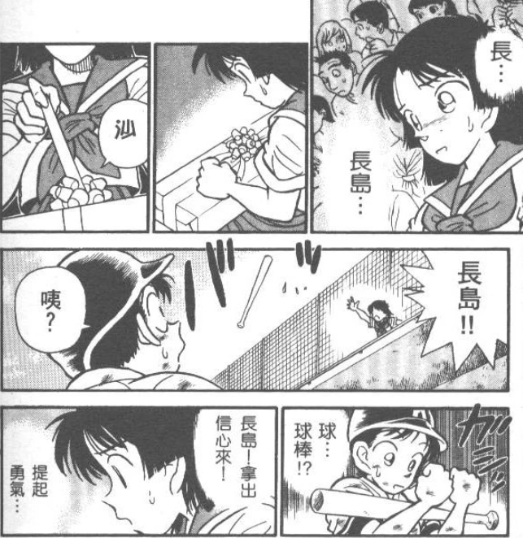
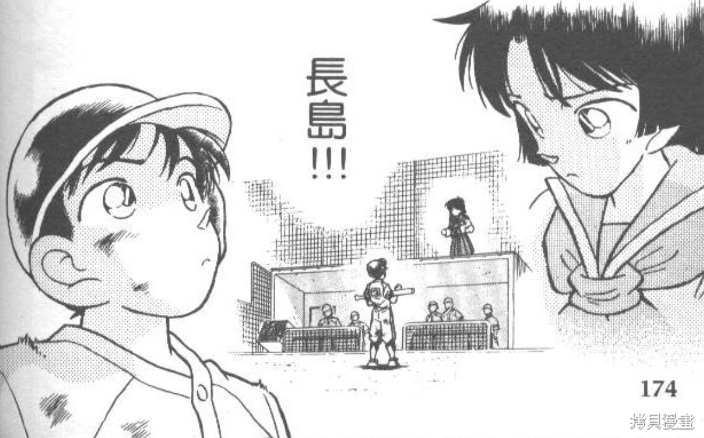
然后就是喜闻乐见的结局，长岛用小丰送的普通球棒击出全垒打，拿到了甲子园冠军。《四号三垒》是青山写从无到有爱情的第一次成功尝试，不同于魔快一开始就给你青梅竹马的设定，剑勇前期描写的铁峰日常完全感觉不到他们之间有爱情，四号三垒的感情线可谓贯彻始终又毫不突兀，读者很容易就能理解为什么长岛会爱上小丰——她真的是值得人爱的女孩子。
剑勇里，铁峰第一次情感爆发，试炼之路里莎也加自愿掉悬崖（后被改编为平和人鱼岛），和四号三垒开始连载的时间点极为接近。也就是说，90年的青山受到了什么影响，恋爱喜剧大魔王的雏形就此产生了。
（另外90年的魔快里，青山也开始画从零开始的探红线。或许是编辑部打压，魔快在那之后停更了三年，探红线直到24年后才被青山重新捡起来，所幸那时候大魔王已经是完全体了，画的探红更为成熟，也算是好事吧）
2024-08-01 21:10 | 贴吧用户_5N4ba8Q:我注意到了一个点，名柯决定动画化是在95年，那么倒推回剑勇，在连载第三年的90年决定动画化虽然有些勉强但也不是说不通（剑勇动画首播于94年4月）。那如果是青山在90年下半年认识了南姐呢？爱情果然是能改变宅男的2024-08-04 07:58 | 不过期月饼♬:回复 贴吧用户_5N4ba8Q :两个人确实是因为剑勇传说认识的，有新闻提及两人认识是因为剑勇传说的声优选拔，南姐也提及过“我刚认识你（青山)的时候柯南还没有连载呢”

另外补充一下名柯里1年后的长丰小情侣，可喜可贺可喜可贺
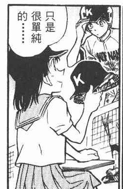
91年开始，剑勇进入辉夜姬篇。虽然屡屡拿剑道比赛冠军，但在之前的战斗里根本算不上战力（这是谁的设定呢？好难猜啊）的女主峰莎也加，终于迎来了加强：她是龙宫公主的后人，是敌人花古夜不惜一切代价也要得到的精华。因此莎也加成了正方水晶——虽然她还是不能算战力。
早年的青山是很喜欢公主塑女主的。《魔术快斗》里几次三番给青子cue了公主设定，而红子出场即被称为女王，最后也是女王输给了什么都不知道的公主。在剑勇的辉夜姬篇，龙宫公主是莎也加，月之女帝是花古夜，这自然是男主铁剑从邪恶女王手中保护公主的故事。
但与此同时我们也能看出来，即使是公主塑女主，青山也是很讨厌骑士公主设定的。
而且铁剑也并不是骑士，龙宫公主是龙王的女儿，铁剑则是比龙王还要高级的龙神。骑士是配不上女主的，只有K才可以——所以为什么青山会被动画组搞的秀哀骑士公主气到发邮件抗议？踩到他的雷点了嘛
早年的青山是很喜欢公主塑女主的。《魔术快斗》里几次三番给青子cue了公主设定，而红子出场即被称为女王，最后也是女王输给了什么都不知道的公主。在剑勇的辉夜姬篇，龙宫公主是莎也加，月之女帝是花古夜，这自然是男主铁剑从邪恶女王手中保护公主的故事。
但与此同时我们也能看出来，即使是公主塑女主，青山也是很讨厌骑士公主设定的。
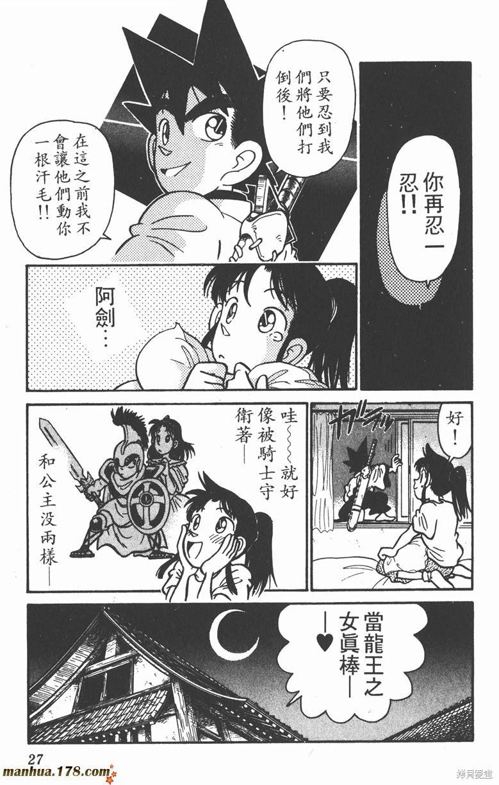
看上去这里是青山在搞骑士姬？但是两页之后，莎也加就被铁剑的各种没节操行为气的把他踹了出去：当龙宫公主太逊了！而且铁剑也并不是骑士，龙宫公主是龙王的女儿，铁剑则是比龙王还要高级的龙神。骑士是配不上女主的，只有K才可以——所以为什么青山会被动画组搞的秀哀骑士公主气到发邮件抗议？踩到他的雷点了嘛
但不得不说，辉夜姬篇莎也加这个龙宫公主，除了推动剧情之外，对她的角色塑造是一点帮助没有。等到了93年的八岐大蛇篇，莎也加的公主身份被第二次提及：为了拯救世界，铁剑需要与被他封印的花古夜合作，莎也加自觉提出来让花古夜附身在自己身上方便压制她——这是全篇莎也加难得的高光。
公主不足以与K相配，只有Q才可以。早在名柯之前，青山就已经认定了这一点啊。
（至于魔快，95年的水晶之母篇里，英格拉姆女王给警部倒酒的分镜与台球手篇青子给警部倒酒的分镜一模一样，这也是青山的小小努力吧。只是之后名柯转成长篇了，没时间再给他画魔快，青子的成长线拭目以待吧。）
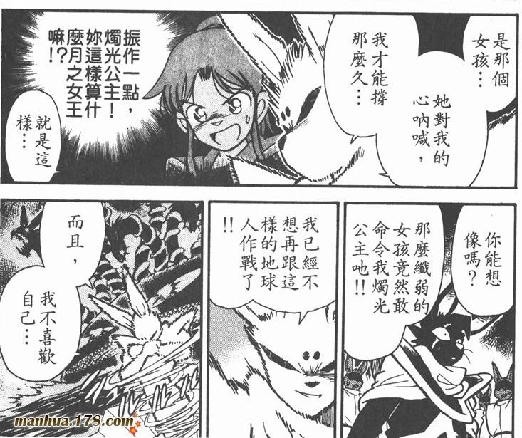
龙宫公主莎也加怒斥月之女帝花古夜不配做女王——这是公主做得到的事吗？（笑）花古夜的话表明她认可了莎也加，也就是说，八岐大蛇篇的莎也加已经不是公主了，她加冕成了女王。公主不足以与K相配，只有Q才可以。早在名柯之前，青山就已经认定了这一点啊。
（至于魔快，95年的水晶之母篇里，英格拉姆女王给警部倒酒的分镜与台球手篇青子给警部倒酒的分镜一模一样，这也是青山的小小努力吧。只是之后名柯转成长篇了，没时间再给他画魔快，青子的成长线拭目以待吧。）
终于到了94年的《名侦探柯南》。
青山说了，最开始只想画个短篇，因此名柯的角色都是匆匆忙忙设计的。但是回顾他以往的作品，发现问题了没有？比起之前女方对男方向下兼容，新兰俨然反过来了，是青山画过的那么多CP的性转版本。
所以我认为青山的话不能全信——至少他有点画长篇的思路。他的处女作快葵就是这样，短篇看和和美美，细想一堆雷。在快青里他逐一避开了这些雷点，但在新兰，他反而进一步拉开了男女主的家世差距，再加强一波一方不理解另一方事业的表现（快斗对葵子的侦探事业好歹只是说她吃力不讨好）。青山能不知道他在画什么吗？他清醒的很，第一卷的新兰可谓是个活扣——如果走中篇那就是兰逐渐理解新一，如果走长篇，那就该让符合他心中完美形象的真正女主角上位了。
青山说了，最开始只想画个短篇，因此名柯的角色都是匆匆忙忙设计的。但是回顾他以往的作品，发现问题了没有？比起之前女方对男方向下兼容，新兰俨然反过来了，是青山画过的那么多CP的性转版本。
所以我认为青山的话不能全信——至少他有点画长篇的思路。他的处女作快葵就是这样，短篇看和和美美，细想一堆雷。在快青里他逐一避开了这些雷点，但在新兰，他反而进一步拉开了男女主的家世差距，再加强一波一方不理解另一方事业的表现（快斗对葵子的侦探事业好歹只是说她吃力不讨好）。青山能不知道他在画什么吗？他清醒的很，第一卷的新兰可谓是个活扣——如果走中篇那就是兰逐渐理解新一，如果走长篇，那就该让符合他心中完美形象的真正女主角上位了。
有人可能会说，哎青山不是喜欢赘婿吗，柯南住进毛利家不就是赘婿吗？
非也非也，纵观青山的那些赘婿，除了长岛哪个不是被对方家里人好声好气对待的——甚至长岛还有小丰护着他。柯南在毛利家过的什么日子？那如果把博士看做是小哀的父亲，柯南究竟更愿意给谁当赘婿呢？
另外符合青山“虽然故事以男方视角展开，但女方提供的价值更多”的思路写的是谁，这看不出来我建议您也别看分析文了。
非也非也，纵观青山的那些赘婿，除了长岛哪个不是被对方家里人好声好气对待的——甚至长岛还有小丰护着他。柯南在毛利家过的什么日子？那如果把博士看做是小哀的父亲，柯南究竟更愿意给谁当赘婿呢？
另外符合青山“虽然故事以男方视角展开，但女方提供的价值更多”的思路写的是谁，这看不出来我建议您也别看分析文了。
2024-07-30 07:55 | 恶势力崛起:给抚养费了还赘婿毛啊2024-07-30 20:29 | 贴吧用户_5N4ba8Q:回复 恶势力崛起 :我的锅我的锅，和神信徒天天对线都被带歪了

所以回到开头的问题，毛利兰真的是青山心中的白月光，只是后来变成了饭黏子吗？
怎么可能，青山朱砂痣的理想模样，从他开始构思名柯起，自始至终都没有变过啊。从危命复活兰带上公主头饰起，从哀自比玛丽女王起，从故事已经接近尾声（朗姆篇）兰却不同于莎也加依旧毫无成长起，赢家究竟是谁已经不言而喻了。
完
怎么可能，青山朱砂痣的理想模样，从他开始构思名柯起，自始至终都没有变过啊。从危命复活兰带上公主头饰起，从哀自比玛丽女王起，从故事已经接近尾声（朗姆篇）兰却不同于莎也加依旧毫无成长起，赢家究竟是谁已经不言而喻了。
完
2024-08-04 04:39 | 贴吧用户_7PX2yAy:隔壁引以为傲的骑士舞台剧啊😹2024-08-04 05:55 | 贴吧用户_5N4ba8Q:回复 贴吧用户_7PX2yAy :青山就喜欢玩这种，舞台剧他埋的梗总是特别多。隔壁魔快的舞台剧马斯与罗莎，剧本上写的敌对国家王子公主爱情故事好像是青山在暗示快青，但快斗改了剧本，最后王子和女仆在一起了。就这样我那些ka同担还喊着甜甜甜，很难不怀疑是sr双担（分析党真的想和某些ka官配解划清界限）2024-08-10 07:12 | 贴吧用户_7PX2yAy:回复 贴吧用户_5N4ba8Q :ka是快青是吗？天呢2024-08-10 09:12 | 贴吧用户_5N4ba8Q:回复 贴吧用户_7PX2yAy :是呢，这算是快青的隐雷。但我的分析是快青必须引爆所有雷才能真正he，所以隐雷反而是必需品2024-08-10 20:30 | 贴吧用户_7PX2yAy:回复 贴吧用户_5N4ba8Q :嗯嗯2024-08-25 12:57 | 贴吧用户_a43ZSXM:奥菲莉娅。王子在失去奥菲莉娅死后才会完成复仇。2024-08-25 12:59 | 贴吧用户_a43ZSXM:压一个毛利兰假死。
吃饭去了，有什么bug之后回来再改
 就是喜欢柯哀的组合设定
就是喜欢柯哀的组合设定毛利兰别说人设还有能力以及家世在名柯都不算出众，连颜值都不是最顶级的，一般这种能力一般人设一般的女主好歹还有个作品里数一数二的颜值设定呢
2024-07-30 10:23 | 贴吧用户_5N4ba8Q:青山笔下女主其实特别突出的还真没有（顶多算宝睦葵子），但是其他方面基本都有补足，毛利兰就是直着把缺点写脸上了（成绩不好、不怎么会推理、武力派不上用场），在青山宇宙所有女主里真就只此一家2024-07-30 11:00 | 羊草轻微◆:回复 贴吧用户_5N4ba8Q :主要那些作品的人设配置也不需要女主太强力吧2024-07-30 13:29 | 贴吧用户_5N4ba8Q:回复 羊草轻微◆ :是，青山宇宙的女主基本都要性格好，关键时刻在大是大非面前靠得住，结果毛利兰就完全是反着来的
顶
有理有据
新一父母也不是青梅竹马，快斗父母啧不是青梅竹马。新一父亲是知名侦探小说家，母亲是退圈影后。快斗父亲是知名魔术师，后来成为了怪盗，快斗母亲本来就是劫富济贫的女怪盗。而且两家是亲兄弟，新一父亲是快斗父亲的弟弟，新一是快斗的堂哥！！！这一家字真乱。而且黑羽盗一的魔术是谁手上学来的不知道。是家传的还是另有名师传授。黑羽家和工藤家长辈一直没有出现。工藤家是随母姓，黑羽家是随父姓。黑羽家和工藤家到底是不是也是大家族豪门呢！！！
2024-08-02 19:20 | 贴吧用户_5N4ba8Q:魔快里说了黑羽盗一师从英国魔术师詹姆斯·霍柏啊……建议先系统看一遍魔快再说
自从知道青山还有魔术快斗这部漫画，看一下快斗和青子的外貌➕上新一和兰的外貌，我就想到了，同样的定位还是会给第二次吗？从那时起我就想毛利兰肯定不是女主的定位，如果动画组不魔改，青山顺利推进他想画的故事会怎么样呢？
2024-08-04 08:52 | 贴吧用户_5N4ba8Q:倒也不必如此……青山早期就是男女主全一张脸，夏日的圣诞老人男女主和ka也长一模一样，小丰和青子也只有发型上的不同（快斗长岛冲田新一是钦定的一张脸）。新兰的怪异性在于它把青山之前那些CP的负面设定都拿了过来，要是走短篇，那兰理解了新一也算是不同于他以往作品的套路，只是后来转长篇了2024-08-04 08:54 | 贴吧用户_5N4ba8Q:另外我在文吧好像也看到过类似观点，毛利兰的定位应当是生育女神阿尔忒弥斯，也就是说当红娘的（说实话这人设要比她现在这个四不像讨喜得多）2024-08-04 09:09 | 血腥开关:回复 贴吧用户_5N4ba8Q :记得青山访谈也说过，想把兰画成一个不太一样的有成长的角色，所以如果动画组不魔改的话，兰其实是女二那种定位，最后会有成长然后新兰和平分手再被配平给哪个角色吧（），现在这样子四不像的原因就是兰角色成长没了，动画组一开始搞太满让青山这个作者都没办法写2024-08-26 11:47 | ily205109:发现了一个事，这几部漫画里女主都是圆眼睛👀
不过是双重反转而已